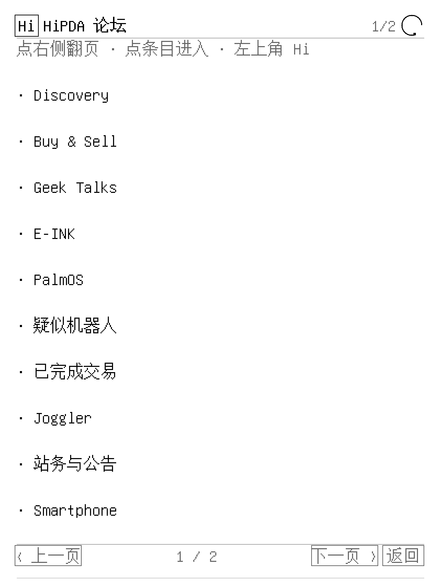
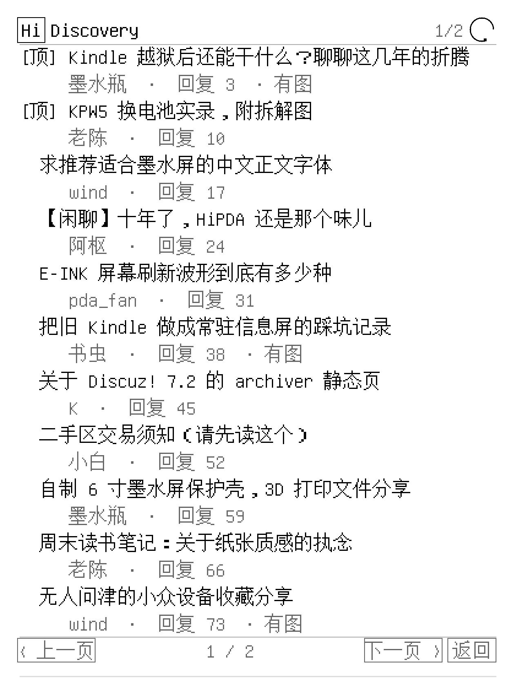
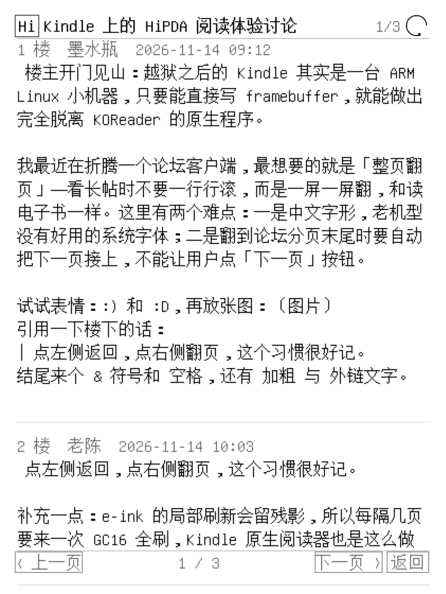
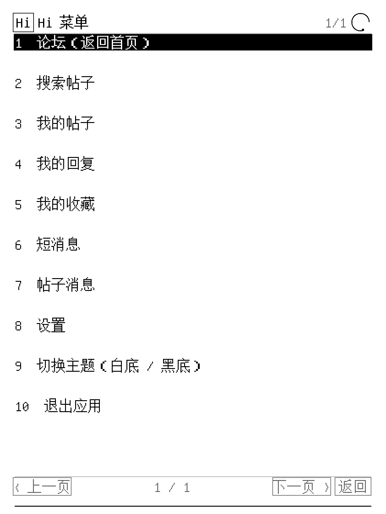
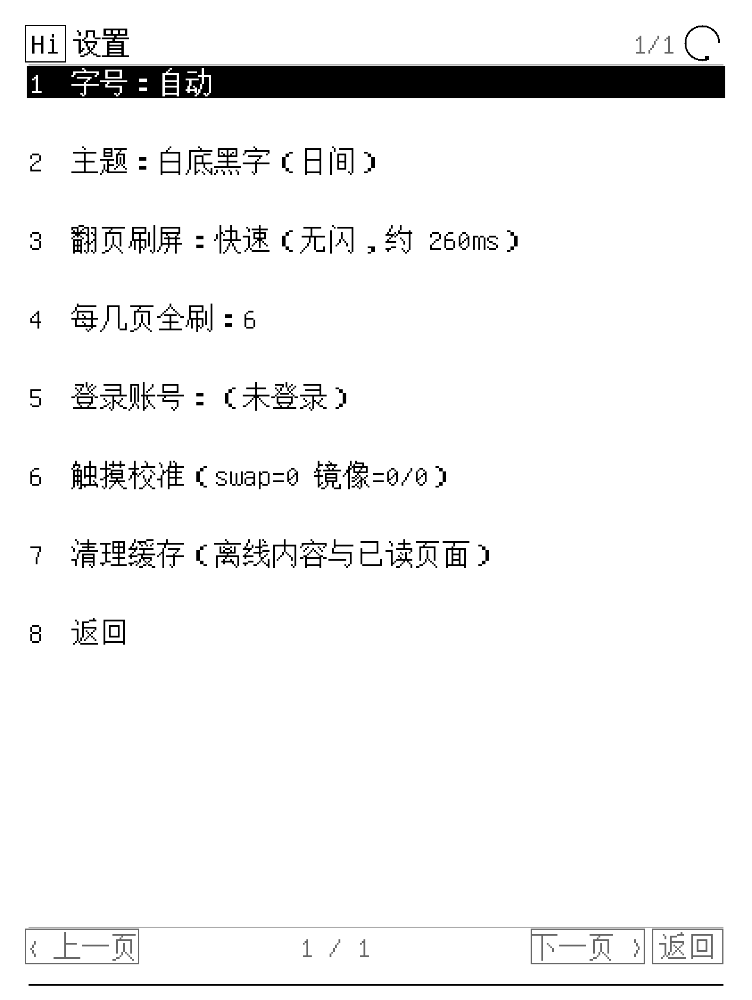
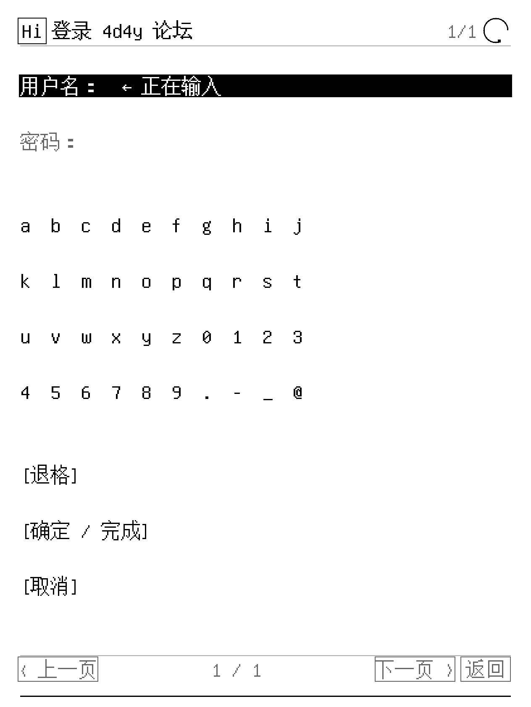

告别 Kindle 浏览器：给越狱 Kindle 写了个 HiPDA 原生客户端（整页翻页 · 离线缓存 · 附下载）
用 Kindle 自带的浏览器刷论坛，大概是这样的体验：页面元素挤成一团、要不停缩放拖动、翻一页等半天，还经常点错链接。既然 Kindle 最擅长的就是「一页一页地翻」，那就干脆给它做一个像看书一样刷论坛的客户端。
这是个跑在越狱 Kindle 上的原生 ARM 程序：不依赖 KOReader、不是网页套壳、也不需要电脑或手机配合。单个静态链接的可执行文件，直接操作帧缓冲、直接读触摸屏，自己完成 GBK 解码、正文清洗和中文排版。
它长什么样



主要功能
- 整页翻页，不是滚动：正文按真实屏幕宽高重新排版、切页，翻页就像看电子书。点屏幕左右两侧翻页，也可以用实体翻页键。
- 点按有反馈：手指按住哪一行，那一行立刻反色成黑底白字，抬起才执行——e-ink 刷新慢，这个反馈很有用。
- 离线缓存 + 秒回：看过的板块列表和帖子会存在机身里，返回上一级是瞬时的（排版结果直接换回来，不重新解析）。只有点右上角刷新键才会重新联网。
- 设备上直接登录：没有账号时启动进登录页，用屏幕键盘输入用户名密码；密码在设备上算成 MD5 后存盘，不留明文。
- 日间 / 夜间主题：白底黑字与黑底白字一键切换，设置随配置保存。
- 触摸校准：有些面板的坐标是互换或镜像的，设置里点四个角就能自动校正，不用改代码。
- 加载可取消：抓网页在子进程里做，加载时点一下屏幕就能中止，不会假死。
- 快刷档位：翻页默认用 DU 波形（约 260ms、纯黑白），每几页自动全刷一次清残影；嫌慢或嫌糊可以在设置里切。



技术上的几个选择
| 问题 | 做法 |
|---|---|
| 中文显示 | 不引入字体引擎，用 Unifont 点阵字库（HUF1），ASCII 占 1 格、汉字占 2 格，按显示宽度折行 |
| 屏幕适配 | 不硬编码分辨率，运行时从 FBInk 读真实宽高和 DPI，反算字号、每行字数、每页行数 |
| 刷新 | 翻页用 DU 波形，每 N 页补一次 GC16 全刷；按压反馈只刷那一行（局部刷新） |
| 联网 | 调用系统 curl（不交叉编译 OpenSSL），在 fork 出的子进程里跑，父进程继续响应触摸 |
| 论坛解析 | 论坛是 Discuz! 7.2 + GBK，解析规则集中在 src/discuz.c 顶部一张表里，改版时对着真实页面调 |
安装
需要已越狱 + 已装 KUAL。把压缩包里的 extensions/hipda 整个目录放到 Kindle 的 /mnt/us/extensions/ 下，然后 KUAL →「HiPDA 论坛」启动。
安装包不自带账号，首次启动会进登录页，输入你自己的论坛账号即可（密码只存 MD5）。
下载（蓝奏云，不限速）
https://wwp.lanzoup.com/iQTD24g86l7i
文件：hipda-kindle-armv6_25.zip（约 1 MB）· ARMv6 软浮点静态链接，K2/K3/K4/K5/PW/Oasis 通用
https://wwp.lanzoup.com/iQTD24g86l7i
文件：hipda-kindle-armv6_25.zip（约 1 MB）· ARMv6 软浮点静态链接，K2/K3/K4/K5/PW/Oasis 通用
目前的限制（说清楚，免得白折腾）
- 只读：不能发帖、回帖。Kindle 没有中文输入法，硬做要自己塞拼音码表，暂时没做。
- 「搜索 / 我的帖子 / 我的回复 / 我的收藏 / 短消息 / 帖子消息」这几项是把对应页面转成整页文本显示，排版不如专门的列表精致，个别页面可能因为模板差异显示不全。
- 主要在 Oasis 3（1264×1680）上验证。其他机型靠运行时自适应，K2/K3 这类极老内核理论上能跑，但我没有实机。
- 论坛对游客有访问限制，登录后才能看完整内容。
反馈
装机后如果白屏或点不动，KUAL 菜单里有「屏幕自检」和「环境自检」，会生成 check.txt，把那个文件发上来我基本能定位问题。有 bug 或者想要的功能都欢迎回帖，我尽量跟。
（程序用 C99 写的，跨平台部分和 Kindle 部分分离，PC 上能跑同一套解析与排版逻辑出预览图，改起来还算方便。）